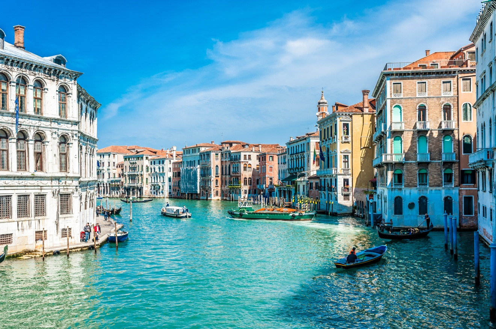
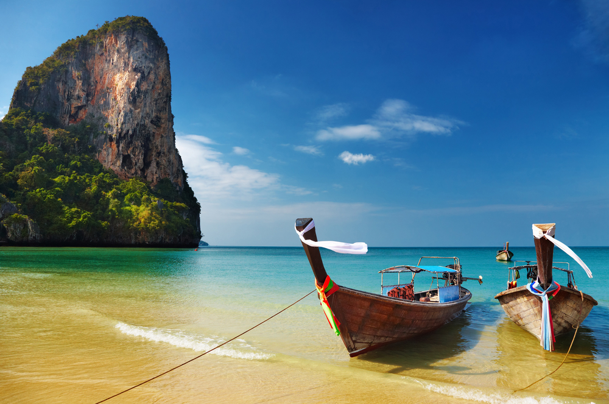
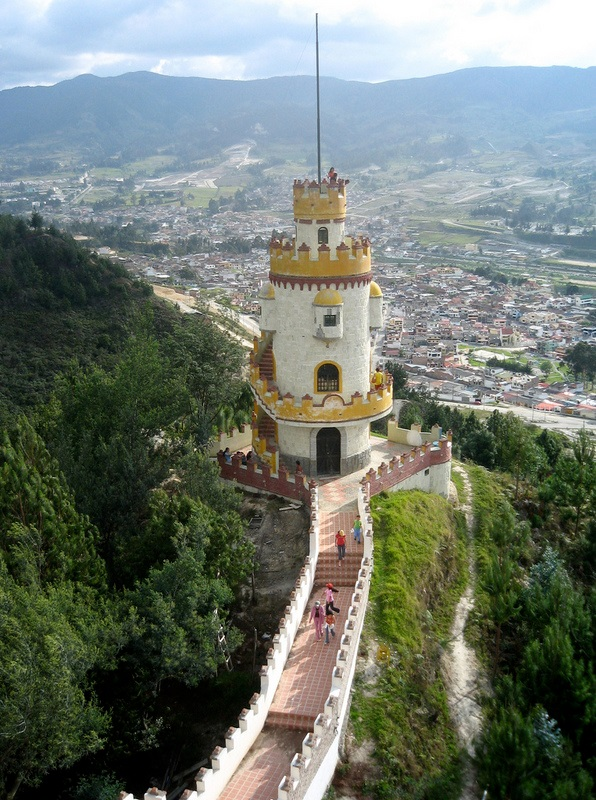
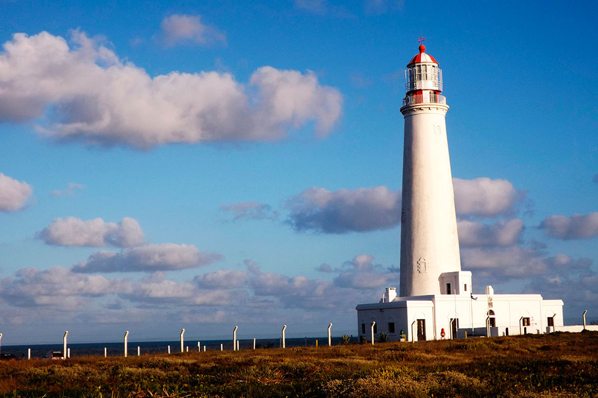

05/11/2016 today Mexico location_on
La Riviera Maya o Rivera Maya es una zona turística de México situada a lo largo del Mar Caribe en el estado de Quintana Roo. Geográficamente se extiende a lo largo del litoral desde la localidad de Puerto Morelos,al norte, hasta la localidad de Punta Allen al sur, unos 140 km de longitud.
En la Rivera Maya hay alrededor de 405 hoteles de clase internacional, 5 estrellas y otras categorías, que ofrecen al menos 43,500 habitaciones. La mayor parte son complejos con sistema todo incluido.
08/02/2017 today Bahamas location_on
Las Bahamas, oficialmente la Mancomunidad de las Bahamas (en inglés: Commonwealth of the Bahamas), es un país en América, constituido por más de setecientas islas (de las cuales, 24 están habitadas y más de 700 deshabitadas), cayos e islotes en el Océano Atlántico; al norte de Cuba y República Dominicana, noroeste de Islas Turcas y Caicos, al sureste del estado estadounidense de Florida y al este de los Cayos de la Florida. Su capital es Nassau situada en la isla de New Providence. Geográficamente las Bahamas forman junto con las Islas Turcas y Caicos el Archipiélago de las Lucayas, también denominado por extensión Bahamas. Por manifiesto de la Real Fuerza de Defensa de las Bahamas, el territorio de las Bahamas ocupa 180.000 millas cuadradas de espacio oceánico, si bien las medidas oficiales les aportarían mucho más espacio económico.
Originalmente habitadas por los lucayos, una rama de la etnia taina, las Bahamas fueron el sitio donde Cristóbal Colón arribó en su primer viaje al Nuevo Mundo en 1492. Luego fueron colonizadas por los españoles desde 1513 hasta 1648, cuando colonos ingleses procedentes de la isla de Bermudas se establecieron en la isla de Eleuthera.
Una persona amante de las playas le gusta aventurarse por el mundo y conocer lugares nuevos